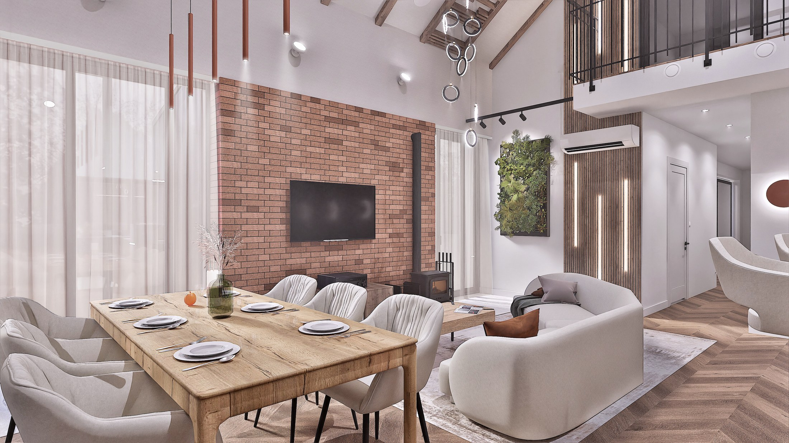

Projekt koncepcyjny

Czekamy na zdjęcie
To Oni Projektują
Najpierw poznajemy człowieka, później projektujemy wnętrze.
Oliwia Brust / Jakub Koprianiuk
Jesteśmy absolwentami kierunku Architektury Wnętrz na Politechnice Śląskiej. Razem założyliśmy pracownię projektową z siedzibą w Gliwicach.
Projektujemy wnętrza, które odpowiadają na potrzeby ich użytkowników. Łączymy estetykę z funkcjonalnością i ponadczasowymi rozwiązaniami tworząc przestrzenie, które na długo pozostaną ciekawe. Wierzymy, że każda realizacja powinna być indywidualną odpowiedzią na styl życia, oczekiwania i charakter osób, dla których powstaje. Nie opieramy się na gotowych schematach, każdy projekt to czas poświęcony analizie stylu życia, potrzeb i tego jak poszczególne elementy będą się zmieniać na przestrzeni lat.
Na każdym etapie współpracujemy z wykonawcami oraz specjalistami z poszczególnych dziedzin, dzięki czemu dokumentacja jest precyzyjna, a proces realizacji przebiega sprawnie i bez zbędnych komplikacji.
Realizujemy projekty na terenie całej Polski. Wychodząc naprzeciw potrzebom i oczekiwaniom, możliwa jest współpraca stacjonarna, zdalna lub w formule hybrydowej, zapewniając wysoki poziom zaangażowania i indywidualnego podejścia niezależnie od lokalizacji Inwestycji.
Nasze projekty
Pakiety
projektowe
Wybierz pakiet dostosowany do Twoich potrzeb.
I
Pakiet I
Konsultacja projektowa
Usługa konsultacji projektowej pomaga w wyborze lokalu bądź rozwiązań projektowych planowanych na Inwestycji.
Rozwiń zakres
+
Usługa konsultacji projektowej pomaga w wyborze lokalu bądź rozwiązań projektowych planowanych na Inwestycji. Są to spotkania, na których analizujemy wady, zalety i możliwości Inwestycji, tak aby przyszła realizacja jak najlepiej odzwierciedlała oczekiwania Inwestora.
Pakiet obejmuje:
- Analizę lokalu
- Analizę planów Inwestycyjnych
- Zalecenia i wskazówki projektowe
W ramach pakietu przekazujemy:
- Notatkę ze spotkania opisująca wszystkie sugerowane rozwiązania projektowe
- Linki do poszczególnych produktów, które pojawiły się na spotkaniu
- Inspiracje omawiane na spotkaniu
II
Pakiet II
Funkcja
Są to rzuty lokalu, podstawa projektu wnętrz, wykonane w oparciu o potrzeby i wytyczne Inwestora.
Rozwiń zakres
+
Są to rzuty lokalu, podstawa projektu wnętrz, wykonane w oparciu o potrzeby i wytyczne Inwestora, przedstawione w formacie schematu mieszkania i poglądowego rozmieszczenia elementów wyposażenia, bazując na standardowych wymiarach obiektów. Ten element projektu skupia się bezpośrednio na prawidłowym funkcjonowaniu wnętrza i ergonomii, tak aby wnętrza były maksymalnie wygodne i praktyczne w użytkowaniu.
Pakiet obejmuje:
- Rzut układu funkcjonalnego
- Rzut analizy rozwiązań projektowych
- Konsultacje online
- 2 korekty układu według wytycznych
W ramach pakietu przekazujemy:
- Plik pdf opracowanego układu oraz analizy projektowej
- Notatki ze wszystkich spotkań projektowych (do 2 dni roboczych po spotkaniu)
- Druk 2 kopii dokumentacji - w zależności od potrzeb
III
Pakiet III
Funkcja i forma
Najbardziej popularna opcja, która jest rozszerzeniem funkcji o formę wizualną projektu wnętrz.
Rozwiń zakres
+
Najbardziej popularna opcja, która jest rozszerzeniem funkcji o formę wizualną projektu wnętrz. Zakres pakietu obejmuje przygotowanie spójnej aranżacji wnętrz, w tym dobór konkretnych materiałów dostępnych w lokalnych salonach. Elementy estetyczne projektu tworzymy w oparciu o potrzeby i preferencje naszych Inwestorów. Podczas konsultacji wspólnie omawiamy proponowane rozwiązania, przedstawiamy je w modelu 3D, a później na wizualizacjach, wraz z konkretnymi produktami, materiałami i wyposażeniem. Dzięki temu już na etapie projektu można zobaczyć, jak poszczególne elementy współgrają ze sobą i świadomie podejmować kolejne decyzje.
Dbamy również o możliwość bezpośredniego poznania wybranych materiałów. Uzyskujemy próbki i wzorniki, które pozwalają ocenić kolor, fakturę i charakter materiałów przed dokonaniem ostatecznego wyboru.
Pakiet obejmuje:
- Elementy pakietu FUNKCJA
- Dobór materiałów wykończeniowych
- Rozwiązania estetyczno-projektowe prezentowane na modelu 3D
- Wizualizacje 3D
- Zestawienie materiałów z linkami do produktów
- Konsultacje online
- Wsparcie Architekta podczas wykonawstwa
- 2 korekty według wytycznych
W ramach pakietu przekazujemy:
- Plik pdf opracowanego układu oraz analizy projektowej
- Plik pdf z wizualizacjami
- Plik pdf z pełną listą materiałów z linkami
- Na życzenie wizualizacje w innych formatach plików
- Notatki ze wszystkich spotkań projektowych (do 2 dni roboczych po spotkaniu)
- Druk 2 kopii dokumentacji - w zależności od potrzeb
IV
Pakiet IV
Pakiet TOP
Jest to pełny zakres projektu wnętrz obejmujący zakres pakietu FUNKCJA I FORMA, poszerzony o rysunki wykonawcze dla poszczególnych branż.
Rozwiń zakres
+
Jest to pełny zakres projektu wnętrz obejmujący zakres pakietu FUNKCJA I FORMA, poszerzony o rysunki wykonawcze dla poszczególnych branż. Cała dokumentacja jest przygotowana z dbałością o każdy detal. Już na etapie tworzenia modelu 3D konsultujemy wprowadzane do wnętrz rozwiązania ze specjalistami w danej branży.
Tym samym częścią pakietu TOP jest koordynacja między wykonawcami, przedstawicielami i salonami a Inwestorem, tak aby realizacja projektu przebiegała bezproblemowo. Zapewniamy również stały kontakt od rozpoczęcia opracowania projektu Inwestycji, aż do dnia zakończenia prac czystych. Chcemy być jak największym wsparciem dla naszych Inwestorów, aby remont nie spędzał snu z powiek.
Pakiet obejmuje:
- Elementy pakietu BASIC i STANDARD
- Dokumentacja wykonawcza 2D
- Schematy isntalacji (elektryczna, wod-kan, HWAC)
- Kosztorys projektowy
- Gotowe oferty zakupowe oraz kosztorys projektowanych rozwiązań
- Wsparcie Architekta podczas wykonawstwa
- Święty spokój
W ramach pakietu przekazujemy:
- Plik pdf opracowanego układu oraz analizy projektowej
- Plik pdf z wizualizacjami
- Plik pdf z kosztorysem
- Plik pdf z dokumentacją wykonawczą
- Kontakty do wykonawców z rejonu inwestycji
- Na życzenie wizualizacje w innych formatach plików
- Notatki ze wszystkich spotkań projektowych (do 2 dni roboczych po spotkaniu)
- Druk 2 kopii dokumentacji - w zależności od potrzeb
Każdy etap ma konkretny cel.
Jest istotnym elementem sprawdzającym mocne i słabe strony rozwiązań i możliwości projektowo funkcjonalnych lokalu. Polecamy ją szczególnie osobom, które stoją przed wyborem lokalu lub projektu domu do zakupu.
W jej obrębie sprawdzamy uwarunkowania techniczne, normy budowlane jak i zasady ergonomii. Przy analizie niezwykle istotne jest poznanie docelowego użytkownika lokalu. Uwzględniamy w codziennym użytkowaniu przestrzeni cechy fizyczne użytkowników, styl życia, obecność zwierząt i przeznaczenie lokalu. Czy lokal będzie w przyszłości wynajmowany lub czy w przestrzeni może pojawić się dodatkowy użytkownik. Analiza zapewnia klarowny ogląd możliwości zastosowania poszczególnych rozwiązań projektowych.
Resultat: Pewny kierunek dalszej pracy lub wyboru Inwestycji.Jest to podstawa dokumentacji projektowej. Polecamy ją szczególnie przy remontach obiektów z rynku wtórnego.
Zawiera dokładne pomiary wykonane przez Architekta wszystkich elementów istniejących w lokalu. Są to pomiary ścian, gabarytów pomieszczeń, wszelkich otworów okiennych, drzwiowych, przyłączy elektrycznych, przyłączy wodno kanalizacyjnych, wszelkich instalacji klimatyzacji oraz wentylacji.. Na podstawie przygotowanych pomiarów Inwestor otrzymuje przygotowaną dokumentację w postaci rysunków architektonicznych. Dodatkowo przygotowywana jest również dokumentacja fotograficzna lokalu, aby zapobiec wszelkim rozbieżnością w trakcie wykonywania projektu.
Rezultat: Klarowna i kompletna dokumentacja stanu istniejącego.Każdy projekt rozpoczyna opracowanie układu funkcjonalnego, który stanowi schematyczną reprezentację projektowanego wnętrza oraz podstawę do dalszych prac projektowych. Na tym etapie określany jest optymalny podział przestrzeni, rozmieszczenie poszczególnych stref funkcjonalnych oraz wstępna lokalizacja wyposażenia.
Proces ten koncentruje się przede wszystkim na zasadach ergonomii, funkcjonalności oraz komforcie przyszłego użytkownika. Dbamy o zachowanie odpowiedniej szerokości przejść, o komfort użytkowania wszystkich pomieszczeń i relacje pomiędzy strefami, tak, aby wnętrze było intuicyjne i wygodne.
Rezultat: Rzuty 2D, definiujące organizację przestrzeni oraz rozmieszczenie wyposażenia.Etap koncepcyjny skupia się bezpośrednio na charakterze wnętrza i jego docelowym wyglądzie. Bazując na dostarczonych wytycznych, opracowujemy stronę wizualną i szczegółowe rozwiązania funkcjonalne. Projekt skupia się tu bezpośrednio na pracy nad bryłami 3D, wiernie odwzorowując efekty przyszłej realizacji.
Podczas procesu tworzenia koncepcji prowadzimy również stałe konsultacje z Inwestorami na temat doboru konkretnych materiałów, zapraszamy Inwestorów do salonów z wyposażeniem wnętrz, aby móc obejrzeć i dotknąć wybrane materiały. Pozwala to zestawić nasze oczekiwania z odczuciami i skonfrontować właściwości na miejscu przed podjęciem decyzji. W przypadku współpracy zdalnej odnajdujemy lokalne zaprzyjaźnione salony, które oferują fachowe wsparcie w zakresie doboru materiałów z Inwestorem, jeśli jest to niemożliwe, pozyskujemy próbki i przekazujemyInwestorowi, aby umożliwić porównania na miejscu Inwestycji.
Efektem finalnym etapu koncepcyjnego są wizualizacje 3D - fotorealistyczne wygenerowane obrazy wdzięcznie oddające prognozowane efekty końcowe.
Rezultat: Fotorealistyczne wizualizacje 3D przedstawiające docelowy wygląd wnętrza wraz z uzgodnioną koncepcją materiałową.Projekt wykonawczy stanowi ostatni etap opracowania projektu kompleksowego oraz podstawę do realizacji Inwestycji. Jest to szczegółowa dokumentacja techniczna, zawierająca wszystkie niezbędne informacje dotyczące sposobu wykonania oraz standardu wykończenia wnętrza. Jej celem jest przekazanie wykonawcom jednoznacznych wytycznych, umożliwiających sprawną i zgodną z projektem realizację prac.
W skład dokumentacji wykonawczej wchodzą m.in. rzuty lokalu, schematy instalacji elektrycznych i wodno-kanalizacyjnych, rzuty sufitów, oznaczenia materiałów wykończeniowych oraz układów powierzchni (posadzki, płytki, tapety itp.), schematy wyburzeń, domurowań, a także rysunki mebli wykonywanych na wymiar.
Wszystkie rozwiązania projektowe są na bieżąco konsultowane z wykonawcami i branżystami, co pozwala zminimalizować ryzyko błędów podczas realizacji. Kompletna dokumentacja usprawnia przebieg remontu, przyspiesza prace wykończeniowe i minimalizuje konieczność podejmowania dodatkowych decyzji na budowie.
Na etapie realizacji zapewniamy również stałe wsparcie zarówno Inwestorowi, jak i wykonawcom. Pozostajemy do dyspozycji w zakresie konsultowania rozwiązań projektowych. Dzięki czemu cały proces przebiega sprawniej, a końcowy efekt jest zgodny z założeniami projektowymi.
Projekt wykonawczy zamyka kosztorys projektowy, który jest zbiorem wycen i ofert produktów zastosowanych w projekcie. Zawiera on wszelkie niezbędne informacje takie jak model produktu, jego kolor oraz rodzaj materiału, ilość, ceny jednostkowe i całościowe, a także linki do produktów wraz z poglądową fotografią. Po zakończonym projekcie przekazujemy również plik zbiorczy zawierający wszelkie niezbędne oferty i wyceny wykonawców, salonów, sklepów, ułatwiając zakup produktów.
Rezultat: Kompletny projekt wykonawczy stanowiący podstawę do realizacji inwestycji oraz koordynacji prac wykonawczych oraz opracowane zamówienia na produkty potrzebne do wykończenia wnętrza.Nadzór nad realizacją inwestycji stanowi rozszerzenie Projektu Wykonawczego i jest usługą dedykowaną Inwestorom, którzy oczekują większego wsparcia na etapie prac wykończeniowych. Obejmuje cykliczne wizyty Architekta na budowie, podczas których weryfikowana jest jakość wykonanych robót oraz zgodność realizowanych prac z dokumentacją projektową.
Liczba wizyt ustalana jest indywidualnie, w zależności od zakresu inwestycji, stopnia jej skomplikowania oraz zastosowanych rozwiązań projektowych. Celem nadzoru jest bieżąca kontrola poprawności wykonywanych prac, identyfikacja ewentualnych niezgodności oraz udzielanie wykonawcom niezbędnych wyjaśnień dotyczących dokumentacji.
Obecność Architekta na etapie realizacji usprawnia komunikację, ogranicza ryzyko błędów wykonawczych oraz pozwala szybciej reagować na pojawiające się pytania i sytuacje wymagające decyzji projektowych. Dzięki temu Inwestor zyskuje większy komfort, poczucie bezpieczeństwa oraz pewność, że projekt jest realizowany zgodnie z przyjętymi założeniami.
Rezultat: Prawidłowo zrealizowana inwestycja zgodnie z dokumentacją projektowąNajczęściej
zadawane pytania
Jak mogę się skontaktować z projektantem?
Poprzez formularz na stronie, telefonicznie lub mailowo. Zawsze zachęcamy również do umówienia się z nami na przedprojektowe spotkanie online na którym możemy porozmawiać o Twoich planach dotyczących Inwestycji, a także pokazać w jaki sposób pracujemy.
Umów się na spotkanieInteresuje mnie konkretny pakiet, ale potrzebuję do niego dodatkowej usługi, możemy ją dodać?
Oczywiście, oferty przygotowujemy indywidualnie pod każdą Inwestycję.
Ile czasu trwa projekt?
Jest to zależne od zakresu projektowego a także od wielkości lokalu. Przyjmując lokal mieszkalny około 70 mkw jest to:
Układ funkcjonalny 7-10 dni roboczych
Projekt koncepcyjny 20-30 dni roboczych
Projekt wykonawczy 30-40 dni roboczych
Wszystko zależy od, skomplikowania projektu, dlatego zachęcamy do omówienia tematu na spotkaniu online.
Umów się na spotkanieCzy posiadacie własnych wykonawców?
Tak, posiadamy firmy i fachowców zajmujących się zarówno kompleksowym wykończeniem wnętrz jak i poszczególnych etapów.
Czy Inwentaryzacja jest mi potrzebna?
Jest konieczna jeśli obiekt nie posiada swojej dokumentacji, szczególnie jeśli jest to budynek z rynku wtórnego, gdzie nierówności ścian i posadzek powinny być sprawdzone i zasygnalizowane na wczesnych etapach.
Z naszego doświadczenia zawsze zalecamy Inwentaryzację, ponieważ daje nam ona pewność wymiarów, i tego na jakie rozwiązania możemy sobie pozwolić i jaka ilość materiałów będzie do tego potrzebna.
W jakim stylu specjalizuje się wasze biuro?
Nie przypisujemy się do konkretnych stylów. Projektujemy pod oczekiwania i wytyczne Inwestorów, starając się oddać ich charakter we wnętrzu. Cenimy sobie indywidualne podejście do każdego klienta, co pozwala nam na ciągłą eksplorację idei i nieograniczanie się do trendów, aby wnętrze pozostało ciekawe na długi czas.
Ile poprawek jest wliczonych w cenę projektu?
W cenie Układu Funkcjonalnego jak i Projektu Koncepcyjnego uwzględnione zostały po 2 poprawki na etap. Oznacza to możliwość wykorzystania dwóch korekt przy rzucie funkcjonalnym, a także modelu 3D. Przewidujemy również możliwość niewielkich zmian kolorystyki w przypadku wizualizacji 3D.
Jak wygląda komunikacja podczas projektu.
Przy opracowaniu każdego etapu ustalane są spotkania online w godzinach dostępności Inwestorów. W przypadku dodatkowych pytań zawsze staramy się być pod telefonem, aby rozwiać wszelkie wątpliwości.
Po spotkaniu, w ciągu 2 dni roboczych przesyłamy notatkę mailową ze wszystkimi ustaleniami, w ten sposób, mamy możliwość wyłapania nieścisłości z rozmów.
Dodatkowo w czasie trwania projektu co tydzień przesyłamy aktualizację mailową z postępów prac nad projektem.
Czy projekt można dostosować do określonego budżetu?
Tak. Jest to informacja niezbędna do podjęcia współpracy. Wszystkie informacje i wytyczne do projektu wnętrz mają szansę zostać zawarte w Ankiecie Inwestora, która przekazywana jest w momencie podpisania umowy z Inwestorem.
Co jeśli produkt z wyceny/kosztorysu będzie niedostępny?
Kosztorys mieści oferty produktów dostępnych stacjonarnie i online. Rozumiemy, że do momentu realizacji oferty mogą się zmienić, jeśli się tak stanie, zawsze staramy się znaleźć produkt zamienny lub o zbliżonych parametrach.
Dodatkowo każda wycena od wykonawcy posiada swoją datę ważności. Jeśli Inwestor podejmie decyzję o realizacji obiektów z wyceny w tym czasie, oferta pozostaje w mocy i zostaje zrealizowana zgodnie z zamówieniem w podanych cenach.
Masz inne pytanie?
Skontaktuj się z nami
Opowiedz nam
o miejscu, które
chcesz zmienić.
E-mail
tooniprojektuja@gmail.com
Pracownia
Gliwice / Śląsk
Zacznijmy od konkretów
Nowa inwestycja
Znajdziesz nas
na Śląsku.
Gliwice
Wyznacz trasę